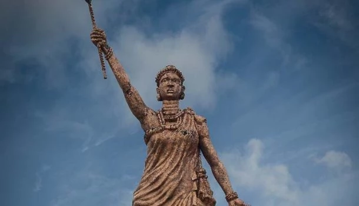
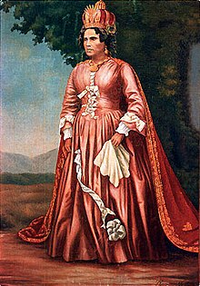
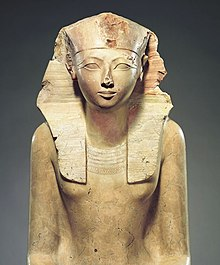
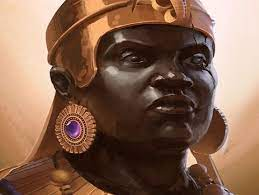
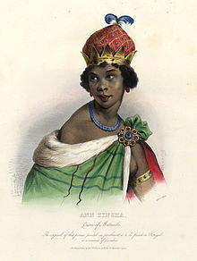
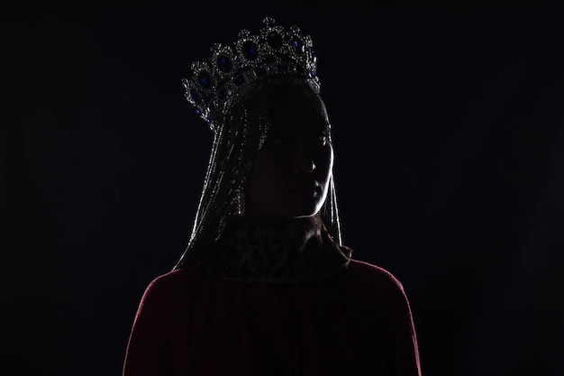
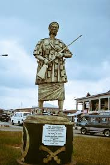
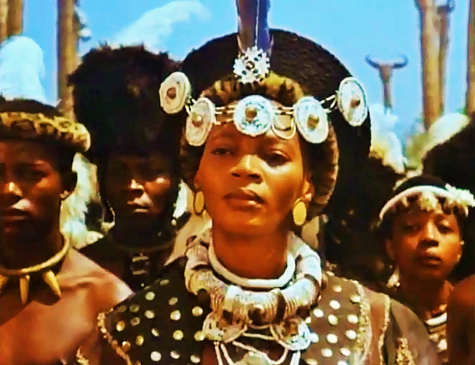
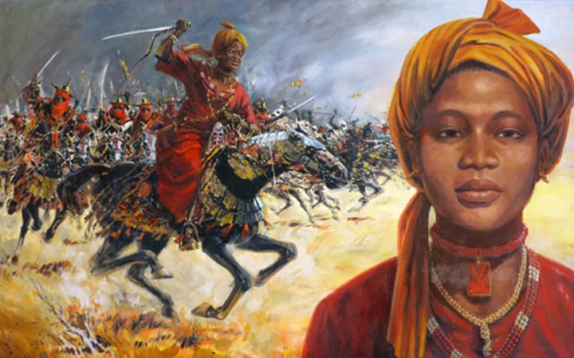

- Moremi
- Ranavalona I
- hatshepsut
- amanirenas
- nzinga
- yargoje
- idia
- ya asantewaa
- Nandi
- amina

Moremi
The Yoruba history is incomplete without mentioning the brave queen of Oranmiyan, Mọremí Àjàṣorò. She is a prominent woman who is said to have given the Yoruba people a reason to live through her selfless actions towards the Yoruba people’s liberty from the hands of their enemies. The Ayaba Moremi, who was born in Offa and lived in the 12th century, was wedded to Oranmiyan, the son of Oduduwa, known as the founder of the Yoruba people and ruler of Ife. According to history, the kingdom of Ile-Ife was at war with a neighbouring tribe known to them as the Forest people, called the “Ugbo Kingdom.”
Moremi was a strong, brave, and beautiful woman who, in order to solve the issue that her people were experiencing, made a significant sacrifice to the Spirit of the River Esimirin in order to learn more about the power over her country’s adversaries.
She was also renowned as an Ile-Ife native who was both brave and selfless.
Ile Ife

Ranavalona
Queen Ranavalona, also known as Ramavo, was one of the most forward-thinking quuens in Africa. As the first queen of Madagascar, she aimed to make her nation self sufficient from Europeans powers. During her 33 years reign, The Queen Ranavalona faced many challenges. She also made significant moves to forward Madagascar Economy and politics.
Born Princess Ramavo in 1778, she wasthe daughter of Prince Andriantsalamanjaka and Princess Rabodonandriantompo.
Read MoreMadagascar

hatshepsut
From Nefertiti to cleopatra, Ancient Egypt is known for its powerful women. Living in a world that was dominated by me, these Ancient Egyptian women ruled with extraordinary power, strengh, and authority, and shaped history!
One of these women was Hatshepsut, and incredible pharoaoh. She changed Egypt for the better during her reign, which lasted from 1478-1458B.C. In the 18th Dynasty.
Read MoreKEMET

Amanirenas
Queen Amanirenas was the ruler of the kushite kingdom in Africa. She led her armies into battle against the Roman Empire, beginning a five-year war.
During the war, she lost one eye and became known as one eyed queen. She prevented the roman invasion of her kingdom, which was something none of previous rulers had done before.
Read MoreKush Present day Sudan

Nzinga
Born as Princess Nzinga among the Mbundu (Ambundu)
group of the Ndongo Kingdom in the central west Africa region now known as Angola.
Her father was Ngola Kilajua, the word 'Ngola' referring to the title of the ruling chief, which later developed into the national name for the region.
Her mother reportedly had no blood ties to the royal family within the landed chieftain system.
Nzinga had one brother, Ngola Mbandi, and two sisters, Kifunji and Mukambu.
Though she resisted Portuguese colonial occupation of central west Africa for over four decades, she officially ruled Ndongo from 1624-1626 and 1657-1663.
Angola

Queen Yargoje of Zamfara
Before Amina was born, another queen had ruled a Hausa kingdom 200 years before.
Yes! Queen Yargoje of Zamfara in present-day North-West Nigeria, reigned for 40 years from 1310 to 1350. She expanded and relocated the capital of the Kingdom from Dutsi to a more tragically defendable area at Kuyambana
Read MoreZamfara

Idia
As mother of the king, Idia and later iyobas wielded considerable power.
Until recent times, the queen mother, who bore the oba’s first son,
had no other children and devoted her life to raising the future ruler of the kingdom, a role she was destined to play even before her own birth.
Two vertical bars of inlaid iron between the eyes allude to medicine-filled incisions that were one source of Idia’s metaphysical power.
Within the court, the queen mother’s political status was equal to that of a senior chief,
and she enjoyed the right to commission precious works of art for personal and devotional use.
Ibini

Ya asantewaa
Yaa Asantewaa was an influential Ashanti queen at the beginning of the twentieth century who remains a powerful symbol today. Her birthdate is contested;
she is generally believed to be born between the 1840s to 1860s in the Ashanti Confederacy in present-day Ghana.
It is believed that she was chosen for this title due to the matrilineal aspect of the Ashanti culture and that her elder brother Nana Akwasi Afrane Okpase, who was a powerful ruler at the time, appointed her to the role.
Read MoreGhana

Nandi
The incredible story of Nandi, Queen of Zululand, isset in the 18th century in the part of South Africa called "Zululand".
Daughterof a chief of the Elangeni tibe, Nandi Bebhe was born in1766 in eBonzini umuzi. Her love for her son and her determination have made her one of the most remarkable African women in history.
Read MoreZulu South Africa

Amina
Queen Amina (also known as Queen Aminatu), was the elder daughter of Queen Bakwa Turunku, the founder of the Zazzau Kingdom in 1536.
Some scholars date Queen Amina's reign to about 1549, as heir apparent after the death of her mother.
Read More